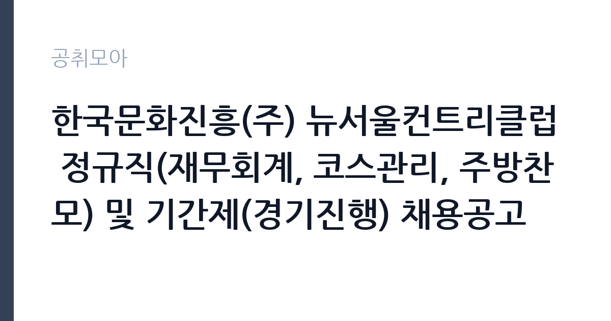

[공공기관] 한국문화진흥(주) 뉴서울컨트리클럽 정규직(재무회계, 코스관리, 주방찬모) 및 기간제(경기진행) 채용공고
한국문화진흥주식회사 · 경기 · 마감 2026-11-06 (D-16) · 출처 잡알리오

한눈에 보는 모집 조건
| 기관 | 한국문화진흥주식회사 |
|---|---|
| 공고명 | 한국문화진흥(주) 뉴서울컨트리클럽 정규직(재무회계, 코스관리, 주방찬모) 및 기간제(경기진행) 채용공고 |
| 고용형태 | 기간제 |
| 근무지 | 경기 |
| 게시일 | 2026-10-21 |
| 마감일 | 2026-11-06 (D-16) |
지원자격, 이렇게 읽으세요
- 공공기관 채용공시
- 세부 조건은 원문 공고문 확인
기간제 근로자는 근로계약 기간이 정해진 신분입니다. 계약 기간과 갱신 가능 여부가 근로계약서에 명시되며 기간 만료 시 근로관계가 종료됩니다. 결원 보충이나 특정 사업 기간에 맞춰 채용되는 경우가 많아 업무 범위가 명확합니다. 이번 공고는 한국문화진흥주식회사에서 직접 진행하는 자체 전형으로, 응시자격과 제출서류는 공고문에 항목별로 제시됩니다. 조리 직무는 조리사 자격증 소지자를 요구하거나 우대하는 경우가 많습니다. 최근에는 위생교육 이수와 건강진단 결과를 제출해야 하므로 채용 전 건강 상태를 준비해야 합니다. 대체인력이나 단기 계약으로 채용되면 근무 기간이 명시되며, 기존 직원의 휴직이나 출산휴가 기간과 맞물리는 경우가 흔합니다. 급식 인원과 조리 인력이 정해져 있어 혼자서 많은 양을 처리해야 할 수 있습니다. 서류는 접수 마감 이후 보완이 되지 않으므로 자격 요건과 증빙 서류를 마감 전에 모두 갖춰야 합니다. 공고문에 명시된 우대 사항은 해당 여부를 확인해 증빙을 첨부해야 가점이 반영됩니다. 공고문의 응시자격 표를 보면 자격 항목이 여러 줄로 나뉘어 있으므로, 각 줄을 하나씩 체크하며 본인 해당 여부를 표시해 두면 누락을 줄일 수 있습니다.
이 공고의 포인트
이 공고의 첫 번째 포인트는 고용 형태입니다. 계약 기간이 정해져 있어 근무 종료 시점이 명확합니다. 그만큼 짧은 기간에 어떤 실적을 남길지가 중요해집니다. 두 번째는 업무 범위가 명확하다는 점입니다. 조리·급식 직무로 채용되므로 배치 이후 담당 업무가 크게 흔들리지 않습니다. 세 번째는 근무지입니다. 경기 지역 근무로 접근성은 좋지만 그만큼 지원자가 몰리는 지역이므로 경쟁률을 넉넉히 잡아야 합니다. 직무 특성이 분명해 본인의 경험과 맞는지 빠르게 판단할 수 있습니다. 같은 직무로 함께 올라온 공고 가운데 접수 마감이 가장 늦은 편이라 준비 시간을 상대적으로 확보할 수 있습니다. 선발 인원은 공고문에 명시되어 있으니 모집분야 항목을 함께 확인하십시오.
전형은 어떻게 진행되나
1차 서류, 2차 면접의 2단계로 진행되는 구성이 일반적입니다. 서류에서는 자격 요건과 경력 증빙을 확인하고, 면접에서는 실제 업무 수행 능력과 조직 적응을 봅니다. 직무에 따라 필기시험이나 실기, 컴퓨터 활용 시험이 추가되기도 하므로 공고문의 전형표를 먼저 확인하십시오. 단계별로 합격자만 다음 전형에 응시할 수 있고, 단계마다 응시 자격 확인 서류를 다시 제출해야 하는 경우가 있습니다. 최종합격자 발표 후에는 신원조회와 채용 신체검사가 남아 있습니다. 제출서류 원본은 최종 단계에서 다시 요구되는 경우가 있어 사본과 함께 보관하십시오.
원문에서 확인한 전형 방식
1. 학력, 전공, 성별, 연령 제한 없음(단, 정규직의 경우 만 60세 정년) 2. 임용 즉시 근무가 가능한 자 3. 한국문화진흥(주) 인사규정 제19조에 의한 채용 결격 사유가 없는 자
이런 분께 추천해요
- 조리사 자격 또는 급식 조리 경력이 있는 분
- 위생 수칙을 습관적으로 지키는 분
- 이른 출근과 정해진 배식 시간을 지킬 수 있는 분
지원 전 체크리스트
- 응시자격 요건과 경력 기준을 충족하는가 — 경력은 증명서로 입증해야 합니다
- 계약 기간과 근무 시작일·종료일을 확인했는가
- 제출서류 목록을 모두 준비했는가 — 누락 시 서류 단계에서 탈락합니다
- 접수 마감 2026-11-06 이전에 접수 방식을 확인해 제출했는가
모집 일정과 제출 타이밍
접수 마감은 2026-11-06이고 공고는 2026-10-21에 게시되었습니다. 준비 기간 16일 안에 서류 작성, 증빙 발급, 접수를 모두 마쳐야 하므로 주말을 포함해 일정을 미리 나누는 것이 좋습니다. 특히 경력 기술서나 직무수행계획서를 요구하는 공고는 작성에 시간이 걸리므로 첫날 초안을 잡으십시오. 서류 합격자 발표와 면접 사이 간격이 짧은 경우가 많아 면접 예상 질문은 서류 제출 전에 정리해 두는 편이 유리합니다. 마감 직전에는 접속이 몰리므로 여유를 두고 제출하십시오. 마감 이후에는 어떤 사유로도 접수가 인정되지 않으므로 하루 전 제출을 목표로 하십시오. 경기 지역 근무지는 사업소나 시설이 외곽에 있는 경우가 많아 차량 통근 가능 여부를 확인해야 합니다. 마감까지 여유가 있어 자격 요건을 천천히 확인하고 준비할 수 있습니다. 선발 인원은 공고문의 모집분야 항목에 직종별로 제시되어 있습니다.
직무 이해하기: 공공기관
문화·예술 기관은 전통문화 보존과 예술인 지원, 공연 기획을 담당합니다. 국악원과 문화재 관련 기관은 공연과 전시, 교육 프로그램을 운영하며 시설과 무대 운영 인력을 함께 둡니다. 조리 업무는 급식 인원에 맞춰 식단을 준비하고 배식하는 일입니다. 재료 검수와 손질, 조리, 배식, 세척, 잔반 처리까지 하루 주기가 정해져 있습니다. 위생 관리 기준에 따라 냉장고 온도와 조리 기구 소독 상태를 기록하고 식중독 예방 수칙을 지켜야 합니다. 학교나 복지시설, 부대 급식소처럼 대상이 정해진 곳에서는 알레르기 유발 식품 표시와 식단표 관리도 업무에 포함됩니다. 아침과 점심 시간에 맞춰 이른 출근이 필요한 경우가 많습니다. 업무는 혼자 처리하기보다 부서 단위로 나눠 진행되므로 담당 구역과 협업 범위를 입사 초에 확인하는 것이 중요합니다. 직무 교육은 입사 후 기관 자체 계획에 따라 진행되므로 사전 경험이 없어도 시작할 수 있습니다.
자기소개서 작성 팁
조리 지원서는 위생과 안전에 대한 습관을 증명하는 데 집중하십시오. 이전 근무지에서 지킨 위생 수칙, 대량 조리 경험, 식단 관리 경험을 구체적으로 쓰십시오. 인원이 적은 급식소에서는 혼자 여러 업무를 처리해야 하므로 동시에 여러 작업을 진행한 경험이 소재가 됩니다. 장기 근무 의사와 이른 출근 가능 여부도 함께 밝히십시오. 직무 경험이 많지 않다면 경험의 양보다 과정을 구체적으로 쓰는 편이 낫습니다. 어떤 상황에서 무엇을 판단했고 어떤 결과가 나왔는지 순서대로 서술하면 신뢰가 생깁니다. 지원 동기와 기여 방안은 한 문단씩 짧게 유지하고, 가장 자신 있는 경험에 분량을 몰아주십시오. 마지막 문장은 포부보다 구체적인 실행 계획으로 끝내는 것이 좋습니다.
면접 준비 포인트
면접에서는 위생 관리와 팀 협업 태도를 확인합니다. 조리 중 위생 사고를 예방하기 위해 어떤 절차를 지키는지, 식단이 갑자기 바뀌면 어떻게 대응하는지, 동료와 역할이 겹칠 때 어떻게 조율하는지를 묻습니다. 조리 자격과 경력은 서류에서 확인되므로 면접에서는 실제 작업 속도와 안전 관리 방식을 보여주는 것이 좋습니다. 답변은 상황, 판단, 조치의 순서로 정리하면 전달이 분명해집니다. 모르는 질문에는 모른다고 밝히고 확인 방법을 제시하는 편이 억지 답변보다 낫습니다. 마지막에는 근무 의사와 함께 2026-11-06 이후 일정에 언제든 응할 수 있다는 점을 전달하십시오. 마지막 질문 시간에는 근무 조건에 대한 확인 사항을 한 가지 정도 준비해 가면 성실성이 드러납니다.
급여·근무조건 읽는 법
조리 직무의 보수는 기관의 직종별 임금표를 따르며, 기본급에 정액급식비와 명절휴가비, 초과근무수당이 더해집니다. 조리사 자격이나 경력에 따라 호봉이 달라지는 경우가 있으므로 경력을 증빙할 수 있는 자료를 준비하면 유리합니다. 2026년 최저임금은 시급 10,320원, 월 환산 2,156,880원이며, 단시간 근무라면 근무 시간에 비례해 계산합니다. 실제 금액은 공고문의 처우 항목에서 확인하십시오. 대체인력 채용은 계약 기간이 짧아 총 급여 규모도 함께 따져야 합니다. 2026년 적용 최저임금은 시급 10,320원, 월 환산 2,156,880원(주 40시간·209시간 기준)입니다. 고용노동부 고시 제2025-47호로 확정된 금액입니다. 보수는 보통 기본급, 각종 수당, 상여로 나뉘어 지급됩니다. 기본급만 보면 적어 보여도 정액급식비와 명절휴가비, 복지포인트가 붙으면 실제 총액이 달라지므로 항목별로 확인해야 합니다. 4대 보험과 퇴직급여 적용 여부도 함께 보십시오. 기간제는 계약 기간이 짧아 월 급여가 높아도 연간 총액은 적을 수 있습니다.
자주 묻는 질문
- 선발 인원은 몇 명인가요?
공고문의 모집분야 항목에 직종별 인원이 표로 제시되어 있습니다. 첨부된 공고문 원문에서 확인하십시오. - 근무지는 어디인가요?
경기 지역의 한국문화진흥주식회사 소속 근무지입니다. 세부 주소와 출퇴근 조건은 원문 공고문에서 확인할 수 있습니다. - 보수는 얼마인가요?
채용 신분(기간제)과 기관 임금 규정에 따라 정해지며 구체적인 금액은 공고문 처우 항목에 제시됩니다. 금액이 공개되지 않은 경우에는 원문의 보수표를 확인하십시오.
함께 보면 좋은 공고
[공공기관] 2026년도 업무지원직(시설지원직) 신규직원 블라인드 공개채용 모집 공고 — 마감 2026-11-05[공공기관] 2026년 제1차 새울원자력본부 기간제근로자 채용 — 마감 2026-11-06[공공기관] 한국기술교육대학교 고용서비스인재교육추진단 연구원 채용 공고 — 마감 2026-11-08출처: 잡알리오 공개정보를 바탕으로 공취모아가 정리한 안내글입니다. 모집 조건·일정은 변경될 수 있으니 지원 전 반드시 원문 공고문을 확인하세요. 본 글은 정보 제공용이며 합격을 보장하지 않습니다.